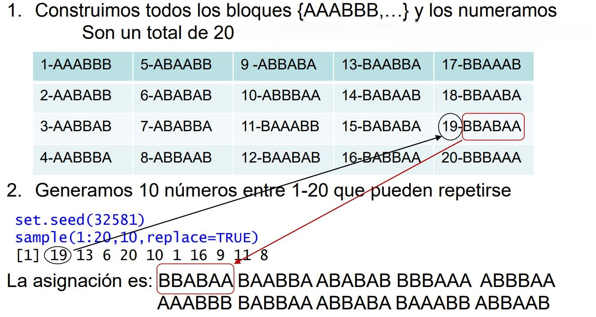

[1] 2 3 4 6 9 10 11 13 17 182. Selección aleatoria de pacientes y asignación de tratamientos
Objetivo.
Llegar a una conclusión que sea válida. Valido = representativo.
Aleatorización.
Exigencia teórica impuesta a experimentos y ensayos clínicos con el objetivo de minimizar la variabilidad de las evaluaciones y evitar la distorsión que pueden producir otros factores en las pruebas experimentales.
Cuántas veces debería hacer la simulación para saber que el resultado es verdaderamente cercano al valor desconocido real. La validez de una estimación está ligada al conportamiento de lo que quiero estimar y con la cantidad de información que tenga.
Hipótesis.
- Los pacientes se eligen aleatoriamente. Cualquier grupo de n pacientes tiene las mismas posibilidades de ser elegido.
- El tratamiento es asignado aleatoriamente. No hay preferencias en la asignación, cada paciente tiene las mismas oportunidades de recibir uno de los tratamientos.
Debo de partir con la idea de que todas las personas que son similares.
Si quiero hacer una comparacion voy a procurar que el tamaño entre las personas que reciben cada uno de los tratamientos es similar.
Ejemplo: aplico varias metodologías de aprendizaje en niños, no puedo tener 10k niños con la metodología antigua y 1 unidad de niños con la metodología nueva, aunque todos sabemos que luego esto nunca se lleva a cabo correctamente. (vamos, la diapo14)
Objetivos de la aleatorización.
- Asegurar que cualquier paciente tiene las mismas oportunidades de recibir el tratamiento experimental.
- Eliminar sesgos en la selección.
- Equilibrar el tamaño de los grupos. (en función del objetivo o de las características experimentales)
- Verificar o estudiar la eficacia de los tratamientos.
Razones para la aleatorización.
- Los sujetos asignados a cada tratamiento tendrán características similares.
- Sin similitud => Sesgo en los resultados.
- Sin similitud => Sesgo en los resultados.
- Ni el investigador, ni el paciente tendrán conocimiento del grupo de asignación en el que se va incluir al participante en el estudio.
- Sesgo en la selección => Efectos del tratamiento sobredimensionados.
- Sesgo en la selección => Efectos del tratamiento sobredimensionados.
- La aleatorización garantiza la validez de los test estadísticos utilizados para comparar tratamientos.
La aleatorización estratificada y la aleatorización adaptada a las covariables controlan la influencia de las covariables.
Si quiero ver si un medicamento funciona mejor que otro:
Necestiamos trabajar sobre un modelo matematico que me confirme que los individuos no estén relacionados entre sí (si son familia pues les sentará igual de mal o igual de bien cada uno de los tratamietos) y homogeneidad entre los dos grupos (un grupo más sano que otro)
Si quiero asginar mi muestra en dos grupos la asignación aleatoria de cada individuo uno por uno va mal si tenemos una muestra reducida (elijo una persona y la asigno aleatoriamente a un grupo, luego con la siguiente). Si n es grande a la larga tendré estabilidad de frecuencias.
Aleatorización simple
Está basada en una única serie de asignaciones aleatorias. Los pacientes se asignan a los grupos de tratamiento del estudio clínico.
Se puede imponer un control realizando asignaciones de modo que haya el mismo número de individuos en cada grupo.
De un grupo de individuo cojo n de ellos sin que se repitan.
Si tengo un n muy grande participando en el estudio no tengo que preocuparme por la selección.
Ventajas:
- Es un procedimiento sencillo y fácil de poner en práctica.
- En estudios de muchos pacientes la aleatorización simple conduce a grupos con un número similar de participantes.
Desventajas:
- Los resultados de la aleatorización pueden dar lugar a grupos de tamaños muy desiguales cuando el estudio involucra a un número reducido de pacientes.
Problema:
- A veces no tengo todos mis pacientes a mis disposición, por ejemplo, a mitad del estudio este se para y tenemos x individuos sin haberle podido dar el tratamiento (ej: se rompe la máquina que da la dosis y muchos pacientes se quedan sin dosis)
- Si el suceso de no poder realizar la asignación a todos los individuos es altamente probable debo tenerlo contemplado. Para ello usamos la aleatorización por bloques.
Por bloques o restringida
Permite asignar aleatoriamente sujetos en los grupos de tratamiento de igual tamaño dividiendo a los pacientes potenciales en m bloques de tamaño 2n, n>1.
En lugar de colocar las n personas al mogollón, voy equilibrando grupos más pequeños. Así si se interrumpe el experimento tengo un experimento más pequeño pero bien repartido.
El procedimiento consiste en repartir toda la muestra en x aleternativas igual que antes pero en vez de tener n/2 y m/2, fijo un tamaño del bloque y dentro de cada bloque jeugo con un reparto equitativo.
El procedimiento se basa en la construcción de todos los posibles bloques distintos formados con n asignaciones A (tratamiento) y n asignaciones B (placebo). La elección de cada bloque es aleatoria.
Selección del tamaño de los bloques.
- Tamaño n múltiplo del número de tratamientos.
- Tamaño n no muy grande porque precisamente lo que quiero son bloques no grandes para poder tener la asignación equilibrada.
- El n=6 suele ir bien.
- Tamaño n dividendo del total de la muestra parece no ser una condición, tal vez el último bloque sea de menor tamaño para asignar a los individuos sin tratamiento.
Ventajas:
- El método asegura tener grupos de tamaño equilibrado a lo largo del proceso de asignación, siempre que se use el bloque completo.
Desventajas:
- Hay que ocultar el tamaño del bloque al clínico para que la asignación no sea predecible.
Si el experimento es doble ciego quiero que el médico no sepa que es asignación por blqoues, ya que si estoy asignando el primer bloque y la mitad de los individuos tienen un tratamiento automáticamente sabe que los n siguientes individuos van a tener el otro tratamiento.
Ejemplo
Asignar tratamiento o placebo a 60 sujetos utilizando bloques de tamaño 6 (2n=6).
Creo todos los bloques de asignación posible con todos los órdenes de asignación.

Selecciono con reemplazamiento los bloques necesarios.
Estratificada
Se utiliza para conseguir un equilibrio entre los grupos respecto a otras características (covariables) de los sujetos. Se complica con la cantidad de covariables que quiera incluir para la creación de grupos.
Controla la posible influencia de las covariables en las conclusiones de la investigación.
La asignación uno a uno de los individuos no se puede si quiere controlar las covariables. La asignación estratificada debe hacerse de entrada. Necesito conocer qué niveles tengo para cada covariable y definir el tamaño muestral para cada nivel o combinación de niveles.
El número de estratos es el múltiplo del número de niveles de cada covariable.
En cada estrato se genera una secuencia de asignación mediante aleatorización simple o por bloques.
Ventajas:
- El método asegura tener grupos de tamaño equilibrado teniendo en cuenta los factores influyentes.
Desventajas:
- Precisa conocer todas las características de los sujetos con anterioridad a la asignación en grupos.
- La técnica se complica al aumentar el número de covariables.
- No puede utilizarse si los sujetos se incluyen en el estudio uno a uno.
Adaptativa o minimización
Tenemos un equilibrio en los bloques en función de los individuos que vamos recibiendo.
Se utiliza para minimizar las diferencias de los tamaños de los distintos grupos.
Cada nuevo sujeto se asigna secuencialmente a un grupo concreto de tratamiento teniendo en cuenta las covariables y las asignaciones de los sujetos anteriores.
El investigador debe elaborar un plan de aleatorización para asignar los tratamientos a los pacientes
Ventajas:
- El método es útil cuando hay muchas covariables y si la muestra de sujetos es pequeña.
Desventajas:
- Precisa recoger todas las características de los participantes con anterioridad a la aleatorización.